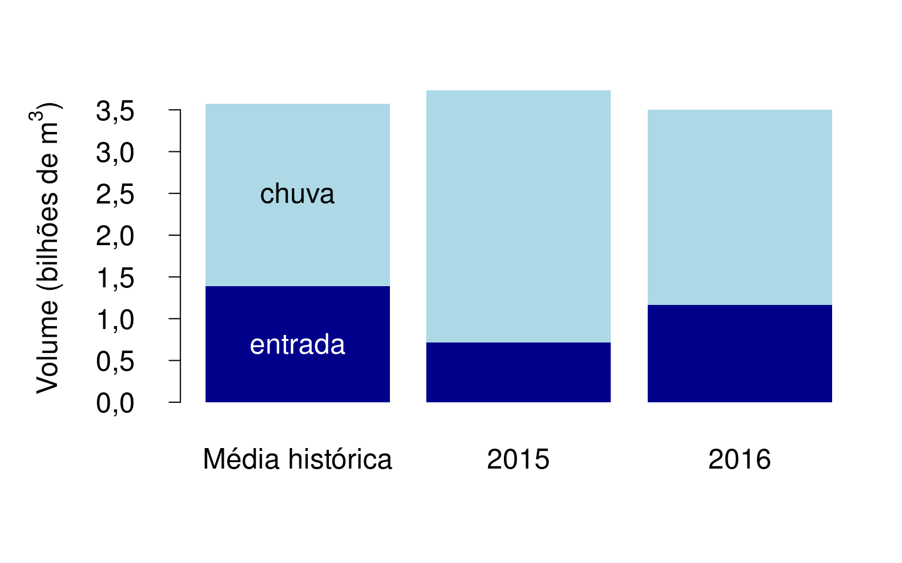

Mais um ano se passou e aqui está o balanço do Sistema Cantareira, com uma boa notícia e um alerta. A boa notícia é que o acúmulo de água armazenada dobrou em relação a 2015 e o sistema fechou 2016 com 58% de seu volume disponível (ou 75% do volume útil).
Por incrível que pareça, o volume de chuva em 2016 foi um pouco menor do que no ano anterior (embora próximo da média histórica). A recuperação está acontecendo porque a eficiência das bacias hidrográficas do Cantareira voltaram ao normal. A eficiência é a proporção da água de chuva que a bacia drena para os reservatórios, e é calculada na última linha da tabela. Historicamente pouco mais de um terço do volume de chuva torna-se água armazenada. O restante fica retido no solo e na vegetação, ou evapora. Em 2014 houve uma forte seca: o volume de chuva foi 60% do normal, e a eficiência caiu pela metade. No ano seguinte as chuvas voltaram ao normal, mas a eficiência, não. O sistema sofreu uma transição crítica1. Foi necessário um outro ano de chuvas normais para a transição se reverter.
O outro motivo para a recuperação do volume armazenado é a continuação da drástica redução na retirada de água. Em 2015 se retirou menos da metade da média histórica. Em 2016 a retirada foi de 60% do volume histórico. Por isso, o saldo entre a entrada e a saída de água dos reservatórios em 2016 foi 3.6 vezes maior do que o normal.
O que se aprendeu? Uma seca pode fazer a bacia hidrográfica mudar abruptamente para um estado de baixa eficiência. O retorno à normalidade não é imediato ou fácil de prever. A eficiência normal levou dois anos para se recuperar, e a retirada de água precisa ser controlada por ainda mais tempo para devolver o reservatório a níveis seguros.

| Média histórica | 2014 | 2015 | 2016 | |
|---|---|---|---|---|
| Volume de chuva | 3571 | 2203 | 3737 | 3504 |
| Entrada | 1389 | 357 | 712 | 1166 |
| Saída | 1135 | 842 | 493 | 717 |
| Saldo entrada - saída | 254 | -484 | 219 | 449 |
| Eficiência | 39% | 16% | 19% | 33% |
Fontes:
Médias históricas de vazões de entrada (1930-2013): Dados de Referência Acerca da Outorga do Cantareira, ANA/DAEE (http://arquivos.ana.gov.br/institucional/sof/Renovacao_Outorga/DDR_Sistema_Cantareira%20-%2012Jun15%20-%20FINAL.pdf)
Vazões de saída (2004-2016), vazões de entrada (2014-2016) e pluviosidade média mensal do últimos 30 anos: SABESP (http://www2.sabesp.com.br/mananciais/)
Baixe aqui a planilha com os dados e cálculos.
O projeto Águas Futuras é uma iniciativa de pesquisadores da USP (Paulo Inácio Prado, do Instituto de Biociências) e da UNESP (Roberto Kraenkel e Renato Coutinho, do Instituto de Física Teórica) que usa modelos matemáticos para os sistema Cantareira a partir de dados públicos. A página do projeto http://cantareira.github.io é atualizada diariamente com projeções para cinco e trinta dias. Também estão disponíveis na página links para todos os dados e programas utilizados, todos de utilização livre não comercial.
Coutinho RM, Kraenkel RA, Prado PI (2015) Catastrophic Regime Shift in Water Reservoirs and São Paulo Water Supply Crisis. PLoS ONE 10(9): e0138278. http://journals.plos.org/plosone/article?id=10.1371/journal.pone.0138278↩